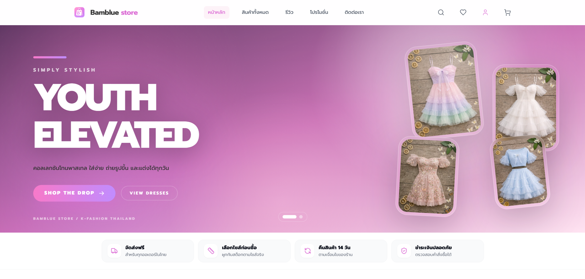
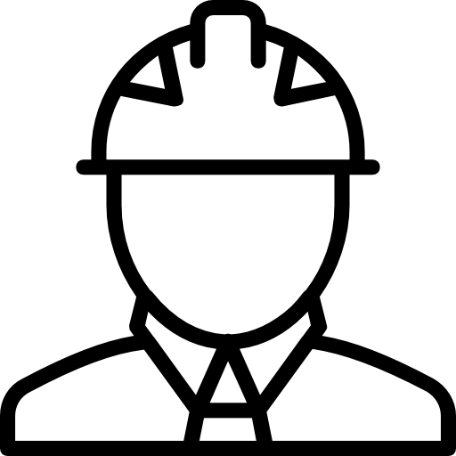

Available for Junior Front-End roles
Frontend Developer with a Civil Engineering Background
I combine engineering logic with modern web development to build responsive, accessible, and polished user interfaces for real-world products.
Tech I work with
Design-minded builder
React, Next.js, Tailwind CSS, and accessible UI systems.
Selected work
Projects built around real product flows.
Focused case-study cards that explain the problem, solution, stack, and working links.
Skills
Technologies & tools I use to build responsive, accessible UIs.
Languages
-
 HTML5
HTML5
-
 CSS3
CSS3
-
 JavaScript
JavaScript
-
 TypeScript
TypeScript
Frameworks & Libraries
-
 React
React
-
 Tailwind CSS
Tailwind CSS
-
 Next.js
Next.js
-
 Supabase
Supabase
AI Tools
-
 ChatGPT
ChatGPT
-
 Gemini
Gemini
- GitHub Copilot
-
 Claude
Claude
-
 Codex
Codex
Tools & Design
- GitHub
-
 Figma
Figma
-
 VS Code
VS Code
- Cursor
- Windsurf
-
 Canva
Canva
Journey
From engineering logic to product-minded front-end development.
-

Civil EngineeringBuilt a foundation in structure, analysis, constraints, and precision.
-
Front-End Development
Shifted into web interfaces, responsive layouts, and interaction design.
-
React
Focused on reusable components, stateful UI, and scalable page structure.
-
Next.js
Practiced routing, performance, SEO, and full product flows.
-
Full-Stack Learning
Expanding into Supabase, authentication, data models, and admin workflows.
About
I design interfaces with structure, clarity, and user intent.
My civil engineering background trained me to think through systems, constraints, and details. I now apply that mindset to front-end development: building responsive UI, improving user flows, and paying attention to performance, accessibility, and visual hierarchy.
- Analytical thinking
- Breaking complex problems into clear, buildable pieces.
- UI/UX mindset
- Designing layouts that are easy to scan, use, and trust.
- Performance aware
- Keeping interfaces lightweight, responsive, and stable.
- Accessibility aware
- Using semantic HTML, focus states, contrast, and keyboard-friendly navigation.
Contact
Let’s build something clean and useful.
I’m open to junior front-end roles, internships, and product-focused web development opportunities.